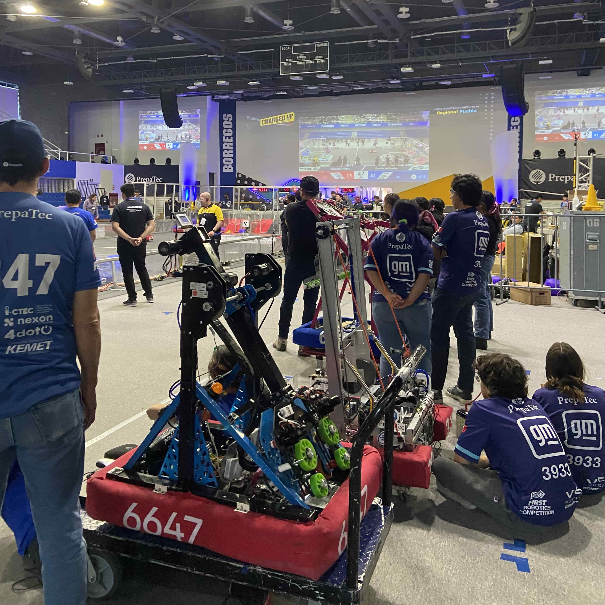

¿De que trata?

Este es el primer año en el que no pertenezco a un equipo de FIRST ni como alumno ni como mentor pero para no dejar de apoyar a la competencia decidí inscribirme como "robot inspector" para el regional de puebla que se llevó a cabo del 16 al 20 de marzo en el Tecnológico de Monterrey Campus Puebla, mi labor fue la de verificar que los 33 robots de la competencia cumplieran con todas las características de seguridad, que sus fuentes de energía como la proveniente de la bateria y todos los circuitos electrónicos funcionaran correctamente y que los sistemas neumáticos no representaran un peligro para nadie dentro de los pits ni dentro de la cancha.
En adición a la labor de inspección serví como voluntario para resolver problemáticas presentes en mecanismos de los robot, en específico rehice todo el sistema neumático de un equipo rookie y expliqué el término de límite de corriente al único equipo 100% de mujeres en México para que pudiera hacer funcionar su brazo correctamente ya que el torque excesivo de su motor ocasionaba que se les rompiera.
Finalmente el último día de competencia me dediqué a desarmar la cancha y prepararla para enviarla a Torreón a su próxima competencia.